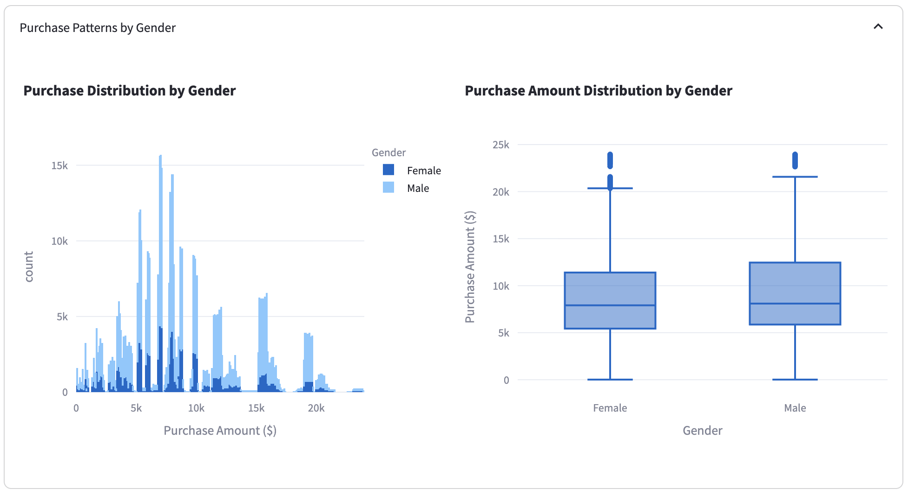
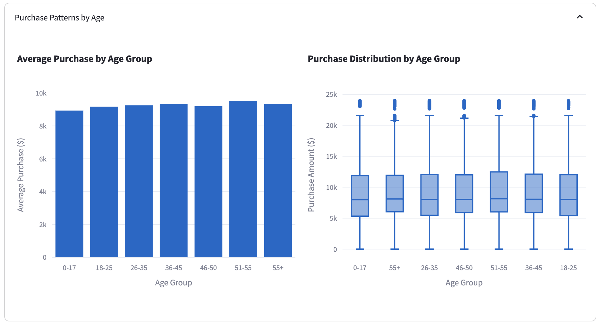
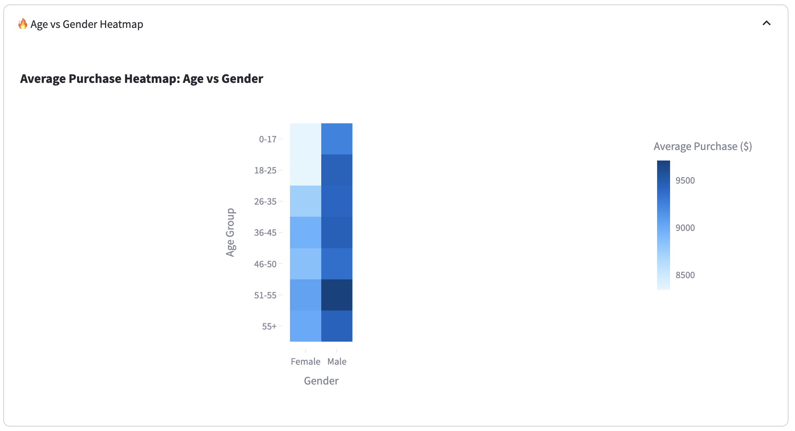
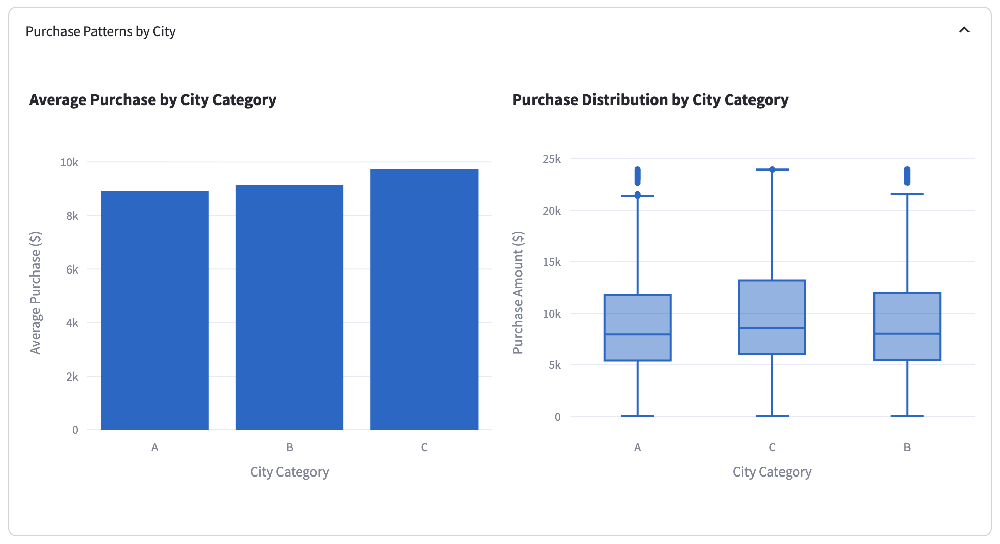
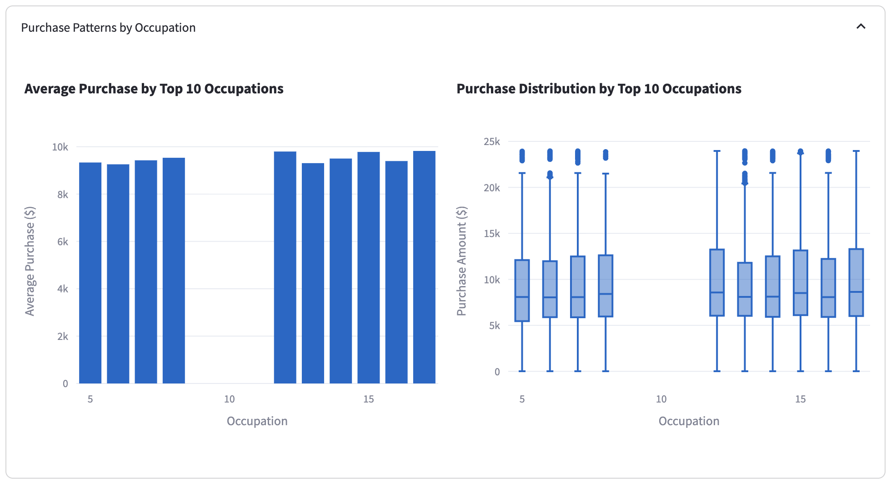
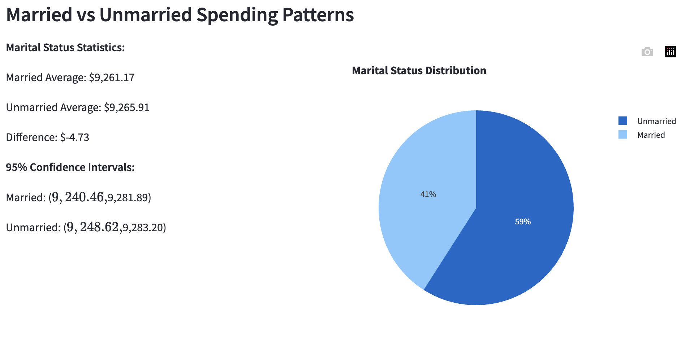
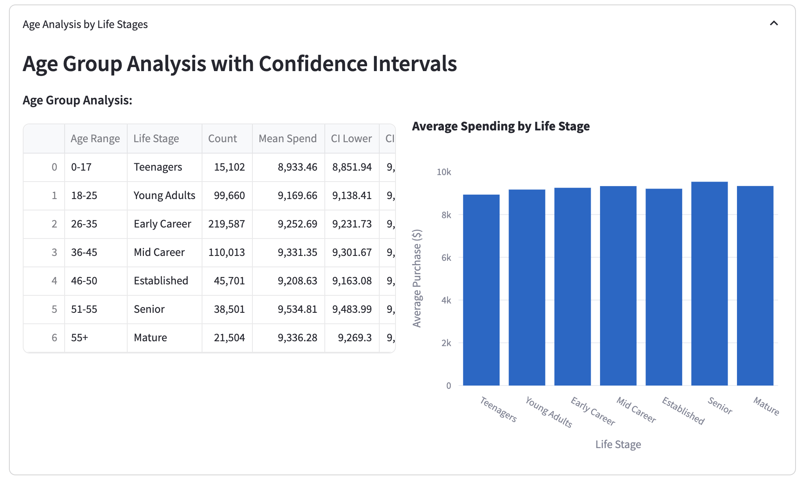

Conducted comprehensive statistical analysis of Walmart's Black Friday customer purchase behavior to determine if spending habits differ between male and female customers. Performed advanced statistical testing including hypothesis testing, confidence intervals, and Central Limit Theorem simulations to provide data-driven insights for business decision-making. Developed an interactive Streamlit dashboard with comprehensive visualizations and business recommendations to support strategic marketing and inventory planning.
• Data Quality Analysis: Ensured data integrity and consistency for reliable statistical analysis
• Gender Analysis: Investigated spending patterns differences between male and female customers
• Age Group Analysis: Identified key demographic segments with highest spending potential
• City Category Analysis: Explored regional variations in Black Friday shopping behavior
• Occupation Analysis: Provided insights for targeted marketing strategies
• Statistical Analysis: Applied rigorous statistical methods for reliable conclusions
• Business Recommendations: Developed data-driven strategies for business optimization







• Collected and preprocessed Walmart Black Friday transactional data to ensure data quality and consistency for statistical analysis
• Conducted comprehensive exploratory data analysis (EDA) using Python and statistical libraries to uncover key trends in customer spending behavior
• Performed hypothesis testing to determine if there are statistically significant differences in spending between male and female customers
• Implemented confidence interval analysis to provide reliable estimates of customer spending patterns with different confidence levels
• Conducted Central Limit Theorem simulations to demonstrate the impact of sample size on statistical precision and reliability
• Analyzed customer segments by age, occupation, city category, and marital status to identify high-value customer groups
• Developed an interactive Streamlit dashboard with comprehensive visualizations and statistical analysis tools for stakeholder engagement
• Created data-driven business recommendations for targeted marketing, inventory optimization, and revenue enhancement strategies
• Applied statistical rigor to business problems, translating complex analytical findings into actionable insights for non-technical stakeholders
• Statistical analysis revealed significant differences in spending patterns between male and female customers
• Central Limit Theorem simulations demonstrated the importance of sample size for reliable statistical inference
• Age group analysis identified key demographic segments with highest spending potential
• Geographic analysis showed regional variations in Black Friday shopping behavior
• Occupation-based analysis provided insights for targeted marketing strategies